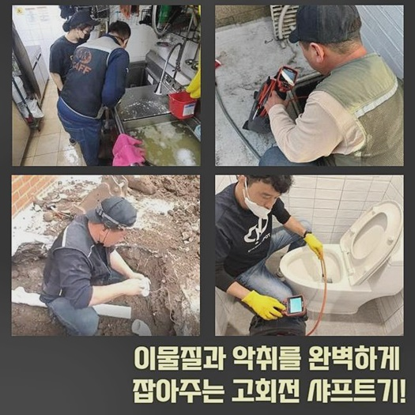
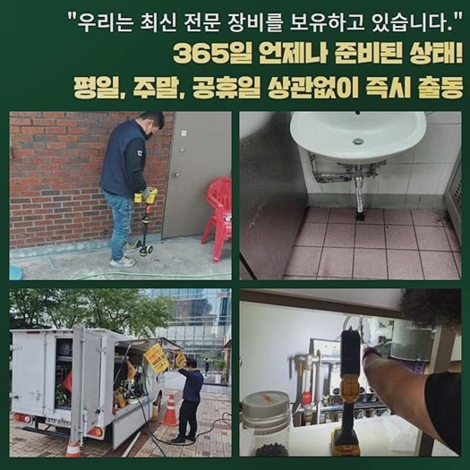
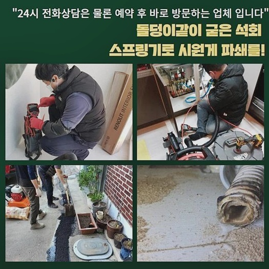
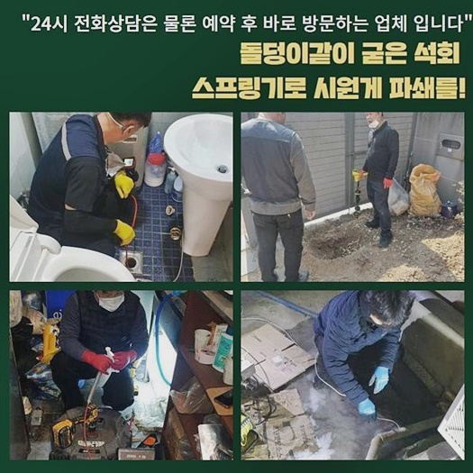
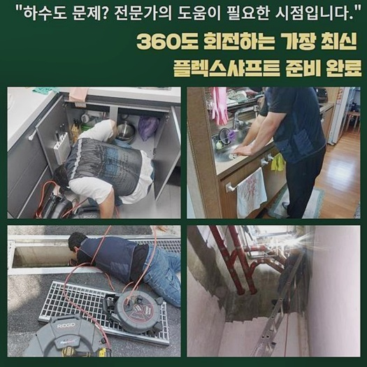
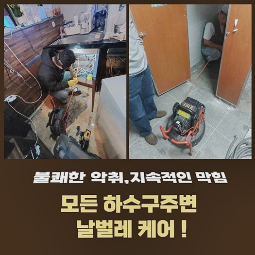

🏠 양주 봉양동화장실막힘 옥정동 배수로뚫기 수리업체
양주 싱크대막힘 전문 시공 후기

📋 작업 개요
- 위치: 양주
- 서비스 유형: 싱크대막힘, 하수구막힘, 배관막힘, 역류해결, 뚫는업체, 배관청소, 고압세척
- 작업 일시: 2024. 8. 23. 10:09
- 업체명: 하수구수사대 (010-5615-2118)
🔍 문제 상황
양주 봉양동화장실막힘 옥정동 배수로뚫기 수리업체
안락한 주거지여도 가끔 발발하는 애로사항들이 있는데요
예상하셨을수도 있겠지만 까다롭게 다가오는건 배수장애죠
물이 고여버린다면 위생적으로도 좋지않은 냄새로 꽉 차며 안락을 위한 주거지가 어느순간 보건적이지 못한 상태로 바뀝니다
막히게되어 물들이 안빠지고 이물들이 솟구치는 상황들이 벌어질 시 내부는 빨리 좋지못한 영향을 미치겠죠?
해당 문제가 발발했을 경우 깨끗하게 시정해낼 수 있는 대책들을 실시하는게 문제들을 시정해주는 업체들의 우선적인 과제인데요
지금부터 고객의 거주지서 실시된 빈틈없던 절차를 상세히 일러드리고자 하는데요
의뢰자는 다용도공간에 존재하는 세탁기의 배수구에서 하수가 안내려간다고 저희업체에게 연락하셨어요
하수관 시정을 바로잡는 저희들은 우선 요구되는 도구들인 샤프트도구 석션기기 내시경카메라를 준비하여 고객님댁으로 찾아뵈었어요
도착하니 악취들과 오염물이 역류하게되는 것을 보았는데요
바로 하수를 모으고 통수들을 시도하기로 했는데요
주된 요인을 제거할땐 간단한 세제 오염원이 아닌, 배수관에 잔존하던 오염원이 솟구치면서 악취를 발생시켰죠

🔎 원인 분석
💡 전문가 진단: 정밀 진단 장비를 사용하여 슬러지의 고착 여부를 판명하고 타격/세척 작업을 실시했습니다.
간혹 싱크대라인과 베란다측의 관로가 이어진 사안이 있으므로 양쪽 관로가 접촉한지 관찰하는 진단절차들을 수행하는데요
곧바로 이물의 형태를 찾아나서기위하여 고객분에게 몇일전 막힘징후가 있다거나 역류문제들이 없었던것인지 물어보았죠
그러더니 앞서서 하수도를 깨끗히 해보기위해서 주변마트에서 구입해 세제용품과 락스를 사용했다 하셨는데요
때문에 씽크대쪽과 이어진 하수도가 문제였을 확률이 높아보였죠
저희전문진이 달려갔던 현장내부의 문제들을 고쳐낼 생각을 하여 그 기조들을 이곳저곳 살피고 있어야하겠습니다
그렇기에 내시경기기를 사용한 뒤 결함이 생긴 하수라인을 점검하기에 앞선 준비까지 마쳤죠
배수관 안이 명확하게 시야확보가 안되면 석션기기를 이용해서 배출되지못한 오수들을 없애줍니다
석션을 이용해 최초의 세척을 실시해주었어요
빨아당길때 잔재들과 오염물이 배출되었으나 특정된 연유는 분명하지 못했죠
흔히 있는 석션장치의 가용으론 효과가 미비한 사안이 충분하기에 다음으로 내시경으로 청소된 내측을 확인할 필요가 있어요
잔재를 구석까지 확인하니 형체가 불분명한 이물이였죠
이것은 세탁기배관에서 흘러나온 옷가지에서 탈락된 이물일 확률들이 많았습니다

🔧 작업 과정
이후에 이런 이물질들을 제거시키고 앞으로는 심층부의 청소에 돌입해야했습니다
이럴땐 심부의 문제를 풀어가고자 완벽한 수리를 하는데 필요한 기술들을 사용해요
내시경카메라를 쓰는 까닭은 깊숙한 지점의 문제를 세세하게 파악해보고 높은 퀄리티의 세척들을 도와주기 때문이죠
석션기기로 세척을 해주고난 후 케이블에 달려있는 내시경장비로 군데군데 자세하게 들여다보았는데요
벽면까지 진단하며 배수장애의 주범들을 확인했어요
오늘의 현장처럼 배수장애는 예상치못하게 발생되며 바로 잡는것또한 쉽지않아요
허나 준수한 해결능력과 경험을 배양한 배관해결사의 해결방식으로 고민을 안정적으로 풀어갈 수 있어요
막히는 증상이 야기되었을 경우 원인들과 부위를 인지하고자 내시경기기를 안쪽으로 투입시켰어요
이용된 수도는 여기저기 뻗어있는 하수도로 빠지는데 하수관의 경우 짧은 경우도 있으나 장거리로 자리하고 있을 수도 있죠
그렇기에 겉으로만 봐선 파악자체가 되지 않는 배관 관로를 내시경으로 구석까지 들여다보았는데요
내측의 상태를 보니 안쪽까지 슬러지 형태와 자잘한 고착물이 이곳저곳에서 뒤엉킨 상황이였는데요
이런 잔재는 녹질 않기에 신속히 고착해버리는 바람에 돌의 모습으로 굳는 특성이있어요
상태를 진단하고 운용하는 기기들이 차이를 보이는데 혹여 커다란 이물이 있을 경우 갈고리부분의 장치로 배출해주고 석션으로 빨아당겨줍니다
심하다면 고착물이 슬러지의 형태로 여기저기에 엉켜있으면 이것들을 제거하는 샤프트도구가 있어야합니다
오염물과 함께 섞이게되며 굳어버린 슬러지와 기름기를 샤프트장비로 탈락시켜주면서 청소시켰어요
샤프트기기는 하수도에서 빨리 돌아가게되면서 이물을 잘게 탈락시키는 필수적인 장비에요
저희의 전문가들이 찾아뵈었던 곳의 모든 잔해가 사라지고서 내시경 내시경장비로 다시금 관찰을 이행해 작업들의 결과들을 체크해주고 배수시켜보는 테스트들도 수행했는데요
그 다음으로 잔존하는 잔여 이물이 보이지않을때까지 석션장치로 흡입하며 꼼꼼히 청소시켜 깨끗하게 만들어주었어요
이러한 문제들을 방지하고자 하면 주기성을 갖춘 진단과 청소작업을 이어가야해요
싱크대라인과 이어진 하수도에서 식자재의 조각들이 구간마다 막히게되어 역류해버리는 경우도 간혹 있답니다


✅ 작업 완료
막혀버리는 사태가 발생되었다면 조속히 저희전문진에게 연락주세요
전문가의 작업은 간소한 과정을 포함하여 주거지의 위생까지 지켜주는 절차입니다
저희의 전문인은 증상들을 제대로 해결해주고 깨끗한 내구성을 영위하도록 도와드리겠습니다
혹시라도 이러한 증상들에 노출되었을때 언제라도 저희의 전문인들에게 문의해보세요!
저희업체의 경우엔 고객분의 수도 사용 실태를 이어가시게끔 최선을 거듭합니다



⚠️ 주방 싱크대 배관 막힘 예방 수칙
- ✅ 기름기가 묻은 식기나 프라이팬은 설거지 전 키친타올로 반드시 기름때를 닦아내세요.
- ✅ 주기적으로 싱크대 개수대에 뜨거운 물을 가득 받아 한 번에 내려 배관 내부 기름을 씻어내세요.
- ✅ 배수구 거름망을 미세한 필터로 사용하시고 음식물 찌꺼기가 틈으로 새어 들지 않게 관리하세요.
- ✅ 베이킹소다와 식초를 뜨거운 물과 함께 일주일에 한 번씩 부어주면 배관 살균과 막힘 예방에 좋습니다.
💡 핵심 정리
- 확실한 장비 작업(내시경 점검 및 샤프트 스케일링)으로 원인을 뿌리 뽑습니다.
- 작업 후 1년 이내에 동일한 부위 재발 시 100% 무상 A/S 서비스를 보장합니다.
- 서울 · 경기 · 인천 전 지역에 24시간 언제든 긴급 출동할 수 있도록 항시 대기 중입니다.
❓ 자주 묻는 질문 (FAQ)
🚨 양주 싱크대막힘 문제로 고민이신가요?
정확한 원인 진단과 확실한 시공으로 재발 없는 해결을 약속드립니다.
24시간 긴급 출동 | 서울 · 경기 · 인천 전지역 | 1년 내 재발 시 무상 A/S